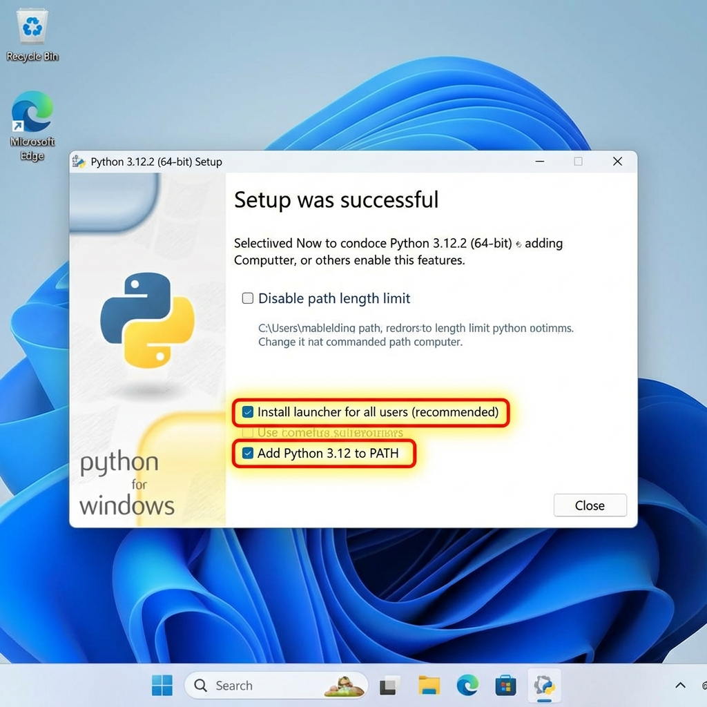
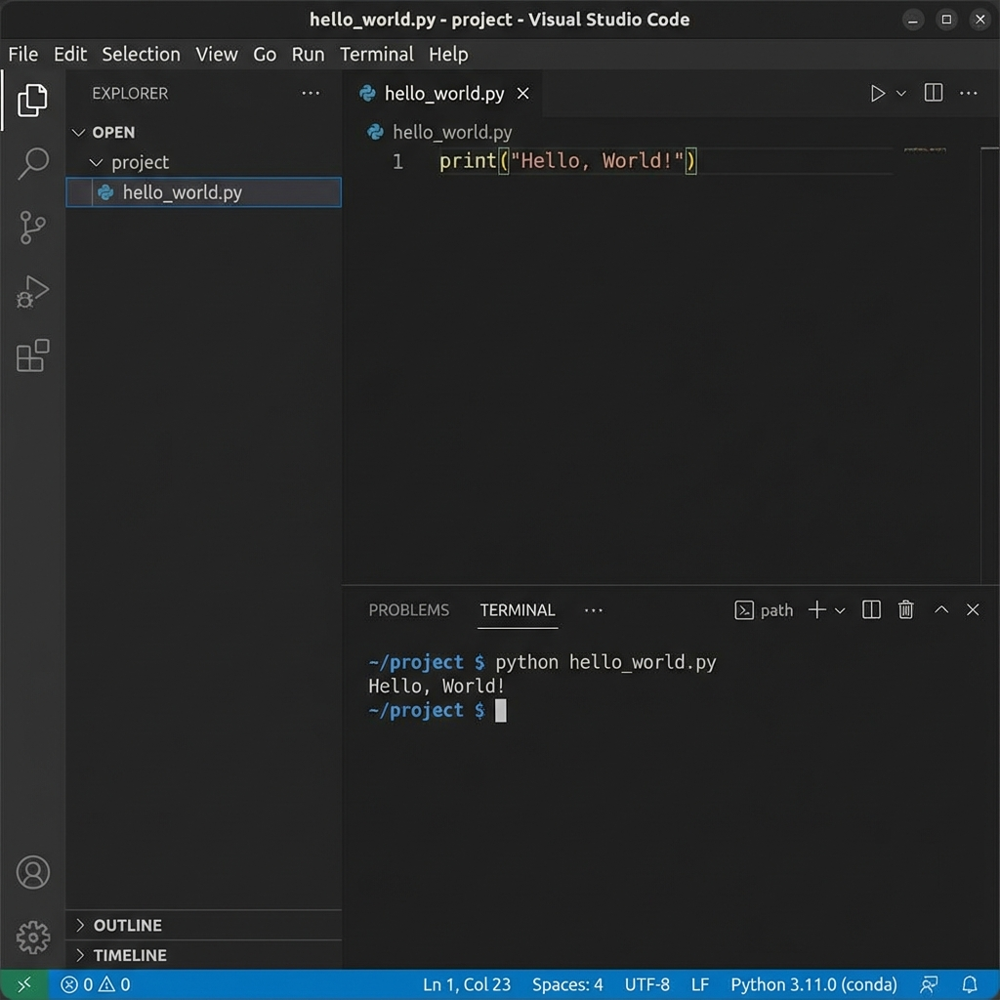

🚀 Instalação do Python no Windows
Guia completo para instalar e configurar o Python no Windows, incluindo o Visual Studio Code como ambiente de desenvolvimento.
📋 Requisitos do Sistema
Antes de começar, verifique se seu sistema atende aos requisitos:
- Sistema Operacional: Windows 10 ou Windows 11
- Espaço em Disco: Mínimo de 500 MB livres
- Permissões: Acesso de administrador (recomendado)
- Conexão: Internet para download dos instaladores
🐍 Passo 1: Instalação do Python
1.1 Download do Python
- Acesse o site oficial: python.org/downloads
- Clique no botão “Download Python 3.x.x” (versão mais recente)
- Aguarde o download do instalador (aproximadamente 25-30 MB)
1.2 Executando o Instalador

!!! important “Atenção” Atenção: Marque a opção “Add Python to PATH” antes de continuar! Isso é essencial para usar o Python no terminal.
Passos da instalação:
- Execute o arquivo baixado (
python-3.x.x-amd64.exe) - ✅ Marque a opção “Add Python to PATH”
- ✅ Marque a opção “Install for all users” (opcional, mas recomendado)
- Clique em “Install Now” para instalação padrão
- Aguarde a conclusão (2-5 minutos)
- Clique em “Close” quando finalizar
1.3 Verificando a Instalação
Abra o Prompt de Comando ou PowerShell e execute:
python --version
Saída esperada:
Python 3.12.0
Também verifique o pip (gerenciador de pacotes):
pip --version
Saída esperada:
pip 23.3.1 from C:\Users\...\Python312\lib\site-packages\pip (python 3.12)
!!! tip “Dica” Se os comandos não forem reconhecidos, reinicie o terminal ou o computador e tente novamente.
💻 Passo 2: Instalação do Visual Studio Code
2.1 Download do VSCode
- Acesse: code.visualstudio.com
- Clique em “Download for Windows”
- Aguarde o download (aproximadamente 90 MB)
2.2 Instalando o VSCode
- Execute o instalador baixado (
VSCodeUserSetup-x64-x.xx.x.exe) - Aceite os termos de licença
- Recomendado: Marque todas as opções adicionais:
- ✅ Adicionar ao PATH
- ✅ Criar ícone na área de trabalho
- ✅ Adicionar ação “Abrir com Code” ao menu de contexto
- ✅ Registrar Code como editor para tipos de arquivo suportados
- Clique em “Instalar”
- Aguarde a conclusão (2-3 minutos)
- Clique em “Concluir” e marque para iniciar o VSCode
🔧 Passo 3: Configurando o VSCode para Python
3.1 Instalando a Extensão Python

- Abra o VSCode
- Clique no ícone de Extensões na barra lateral (ou pressione
Ctrl+Shift+X) - Digite “Python” na barra de pesquisa
- Instale a extensão “Python” da Microsoft (a primeira da lista)
- Aguarde a instalação (1-2 minutos)
3.2 Extensões Recomendadas
Instale também estas extensões úteis:
| Extensão | Descrição | Comando |
|---|---|---|
| Pylance | IntelliSense avançado para Python | Buscar “Pylance” |
| Python Indent | Indentação automática inteligente | Buscar “Python Indent” |
| autoDocstring | Gera docstrings automaticamente | Buscar “autoDocstring” |
| Better Comments | Destaca diferentes tipos de comentários | Buscar “Better Comments” |
3.3 Configurações Recomendadas
Abra as configurações (Ctrl+,) e ajuste:
{
"python.linting.enabled": true,
"python.linting.pylintEnabled": true,
"python.formatting.provider": "black",
"editor.formatOnSave": true,
"python.terminal.activateEnvironment": true,
"files.autoSave": "afterDelay",
"editor.fontSize": 14,
"editor.tabSize": 4
}
🎯 Passo 4: Seu Primeiro Programa Python
4.1 Criando um Projeto
- Crie uma pasta para seus projetos Python:
mkdir C:\MeusProjetos\Python cd C:\MeusProjetos\Python - Abra a pasta no VSCode:
code .
4.2 Criando o Arquivo Python

- No VSCode, clique em “Novo Arquivo” ou pressione
Ctrl+N - Salve como
hello.py(Ctrl+S) - Digite o seguinte código:
# Meu primeiro programa Python!
def saudar(nome):
"""Função que retorna uma saudação personalizada."""
return f"Olá, {nome}! Bem-vindo ao mundo Python! 🐍"
# Programa principal
if __name__ == "__main__":
nome = input("Digite seu nome: ")
mensagem = saudar(nome)
print(mensagem)
print(f"
Você está usando Python para programar!")
4.3 Executando o Programa
Método 1: Botão Play
- Clique no botão ▶️ (Play) no canto superior direito
Método 2: Terminal Integrado
- Abra o terminal integrado (
Ctrl+'ou View > Terminal) - Execute:
python hello.py
Método 3: Atalho de Teclado
- Pressione
F5para executar em modo debug
Saída esperada:
Digite seu nome: João
Olá, João! Bem-vindo ao mundo Python! 🐍
Você está usando Python para programar!
🌐 Passo 5: Ambientes Virtuais (venv)
5.1 Por que usar ambientes virtuais?
Ambientes virtuais isolam as dependências de cada projeto, evitando conflitos entre versões de bibliotecas.
flowchart LR
A["Sistema] --> B[""""Projeto A venv"""""]
A --> C[Projeto B venv]
A --> D[Projeto C venv]
B --> E[Django 4.0]
C --> F[Django 3.2]
D --> G[Flask 2.0]
5.2 Criando um Ambiente Virtual
No terminal do VSCode, dentro da pasta do projeto:
# Criar ambiente virtual
python -m venv venv
# Ativar o ambiente (Windows PowerShell)
.\venv\Scripts\Activate.ps1
# Ativar o ambiente (Windows CMD)
venv\Scripts\activate.bat
Após ativar, você verá (venv) no início da linha do terminal:
(venv) PS C:\MeusProjetos\Python>
5.3 Instalando Pacotes no Ambiente Virtual
Com o ambiente ativado:
# Instalar um pacote
pip install requests
# Instalar múltiplos pacotes
pip install pandas numpy matplotlib
# Salvar dependências em arquivo
pip freeze > requirements.txt
# Instalar de arquivo de dependências
pip install -r requirements.txt
5.4 Desativando o Ambiente Virtual
deactivate
!!! note “Nota” O VSCode detecta automaticamente ambientes virtuais e oferece selecioná-los como interpretador Python.
🔍 Passo 6: Testando Tudo Junto
Vamos criar um projeto completo para testar:
6.1 Estrutura do Projeto
meu_projeto/
├── venv/ # Ambiente virtual
├── src/ # Código fonte
│ ├── __init__.py
│ └── calculadora.py
├── tests/ # Testes
│ └── test_calculadora.py
├── requirements.txt # Dependências
└── README.md # Documentação
6.2 Código de Exemplo
src/calculadora.py:
"""Módulo de calculadora simples."""
def somar(a, b):
"""Retorna a soma de dois números."""
return a + b
def subtrair(a, b):
"""Retorna a subtração de dois números."""
return a - b
def multiplicar(a, b):
"""Retorna a multiplicação de dois números."""
return a * b
def dividir(a, b):
"""Retorna a divisão de dois números."""
if b == 0:
raise ValueError("Não é possível dividir por zero!")
return a / b
if __name__ == "__main__":
print("Calculadora Python")
print(f"5 + 3 = {somar(5, 3)}")
print(f"10 - 4 = {subtrair(10, 4)}")
print(f"6 * 7 = {multiplicar(6, 7)}")
print(f"15 / 3 = {dividir(15, 3)}")
Execute:
python src/calculadora.py
⚠️ Troubleshooting - Problemas Comuns
Problema 1: “python não é reconhecido”
Causa: Python não está no PATH do sistema.
Solução:
- Desinstale o Python
- Reinstale marcando “Add Python to PATH”
- OU adicione manualmente ao PATH:
- Abra “Variáveis de Ambiente”
- Edite a variável
Path - Adicione:
C:\Users\SeuUsuario\AppData\Local\Programs\Python\Python3xx
Problema 2: Erro ao ativar venv no PowerShell
Erro: cannot be loaded because running scripts is disabled
Solução:
# Execute como Administrador
Set-ExecutionPolicy -ExecutionPolicy RemoteSigned -Scope CurrentUser
Problema 3: VSCode não encontra o Python
Solução:
- Pressione
Ctrl+Shift+P - Digite “Python: Select Interpreter”
- Selecione a versão instalada do Python
Problema 4: Extensão Python não funciona
Solução:
- Desinstale a extensão Python
- Reinicie o VSCode
- Reinstale a extensão
- Recarregue a janela (
Ctrl+Shift+P> “Reload Window”)
Problema 5: pip install falha
Solução:
# Atualize o pip
python -m pip install --upgrade pip
# Use --user se tiver problemas de permissão
pip install --user nome-do-pacote
📚 Próximos Passos
Agora que você tem tudo configurado:
- ✅ Explore a documentação: docs.python.org
- ✅ Faça os exercícios: Acesse a seção Exercícios
- ✅ Pratique projetos: Veja nossos Projetos
- ✅ Aprenda sobre bibliotecas: Explore PyPI
🎓 Recursos Adicionais
Documentação Oficial
Comunidades
Cursos Gratuitos
!!! tip “Dica Final” Dica Final: Pratique todos os dias! Mesmo que seja apenas 15 minutos, a consistência é a chave para dominar Python. 🚀
Pronto para começar? Volte para as Aulas e comece sua jornada! 🐍